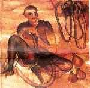
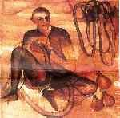
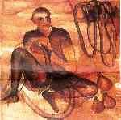

January-February 1998 | March-April 1998 | May-June 1998 | July-August 1998 | September-October 1998 | November-December 1998

|
C O N T E N T S | ||
| VOL. III NO. 1 / 2 |
36 PAGES |
JAN-FEB 1998 |
| COVER PAINTING: 'Prasadhan'. by Lalu Prasad Shaw. 1992. Tempera on paper from the book Indian Contemporary Art Post Independence, published by the Vadhera Art Gallery, New Delhi. | ||
| 4 | World Orders, Old and New by Noam Chomsky | Sham Lal |
| 5 | Beauty Queens, Children and the Death of Sex by Richard Crasta | Shobori Ganguli |
| 7 | Reforming the Body, Religion, Community and Modernity by Philip A. Mellor and Chris Shilling | Nivedita Memon |
| 8 | Borders and Boundaries: Women in India's Partition by Ritu Memon and Kamal Bhasin | Andrew Whitehead |
| 9 | Conversation as Method: Analyzing the Relational World of People who were Raised Communally by Ruthellen Jasselson, Amia Lieblich, Rich Sarabany, Hadas Wiseman | Urvashi Butalia |
| 11 | Feminism and the New Democracy: Resiting the Political edited by Jodi Dean | Neera Chandhoke |
| 13 | Feminist Spaces: Cultural Readingsfrom India and Canada by MalashriLal | Nilima Das |
| 14 | Media and Cultural Regulation edited by Kenneth Thompson | Sevanti Ninan |
| 15 | Women's Health, Public Policy and Community Action edited by Swapna Mukhopadhyay | Stina Almroth |
| 16 | Restoring Childhood.- Learning, Labourand Gender by Sumi Krishna | Kathinka Sinha-Kerkhoff |
| 18 | Representing the Body: gender issues in Indian art edited by Vidya Dehejia | Juliet Reynolds |
| 19 | Walking Naked by Vijaya Ratnaswamy | Raghav R. Menon |
| 20 | The Durga Temple at Aihole: A Historiographical Study by Gary Michael Tartakov | Shobita Punja |
| 21 | Those Days by Sunil Gangopadhyay and translated by Aruna Chakravarti | Tanika Sarkar |
| 22 | Colonial Masculinity by Mrinalim Sinha | Brinda Bose |
| 24 | The Invisibles: A tale of the eunuchs of India by Zia Jaffery | Anin Loomba |
| 26 | Bridget Jones's Diary by Helen Fielding | Ira Pande |
| 27 | The Anger of Aubergines: Stories of Women and Food by Bulbul Sharma | Nilanjana S. Roy |
| 28 | Shadow Space by Jayanta Mahapatra, The Shock of Arrival: Reflections on Postcolonial Experience by Meena Alexander, In Grey Circles by Sunanda Swarup, The Professional Women's Dreams by Sagari Chabra | Keki N. Daruwalla |
| 29 | A Revolutionary Life: Memoirs ofa Political Activist by Lakshmi Sahgal. An extract of an intmiew with the author | Ritu Menon and Kanda Bhasin |
| 32 | Not entitled: a memoir by Frank Kermode | Dilip M. Menon |
| 33 | The Seeds of Time by Fredric Jameson | Shelley Walia |
STINA ALMROTH is a scholar and Programme Associate with the Population Council. KAMLA BHASIN works with the United Nations and is active with the women's movement in South Asia. BRINDA BOSE teaches at the Department of English, Hindu College, Delhi University URVASHI BUTALIA is co-founder of Kali for Women and co-editor of Women and the Hindu Right. NEERA CHANDHOKE is Professor at the Department of Political Science, University of Delhi. She is currently a Jawaharlal Nehru Fellow. KEKI N. DARUWALLA is a writer and poet. His latest book is The Minister for Permanent Unrest and Other Stories. NILIMA DAS teaches English. She is a poet and has written a book of poems titled My Roots. SHOBORI GANGULI is Assistant Editor with The Pioneer, New Delhi. ANIA LOOMBA is Associate Professor of English at the Jawaharlal Nehru University, New Delhi. DILIP M. MENON is a Nehru Memorial Museum Library Fellow. NIVEDITA MENON is a Lecturer in Political Science, Lady Shri Ram College, Delhi University. RITU MENON is co-founder of Kali for Women. She is co-editor of Against All Odds: Essays on Women, Religion and Developmentfrom India and Pakistan. RAGHAV R. MENON is a music critic and author of several books including Pilgrim of the Swara: Life of K. L. Saigal. SEVANTI NINAN is a columnist for The Hindu. SHOBITA PUNJA is an art historian and author of Divine Ecstasy: The Story of Khajuraho and Daughters of the Ocean. JULIET REYNOLDS is a freelan ce writer and art critic based in Delhi. NILANJANA S. ROY is Assistant Features Editor of Business Standard. TANIKA SARKAR teaches English at St. Stephens College, Delhi University KATHINKA SINHA-KERKHOFF is a scholar and author of Save Ourselves and the Girls! Girlhood in Calcutta under the Raj. SHELLEY WALIA is Professor of English at the Panjab University. ANDREW WHITEHEAD is a former BBC Delhi correspondent. He has recently returned to India for the BBC. |
|
C O N T E N T S | ||
| VOL. IV NO. 3 / 4 |
36 PAGES |
MARCH-APRIL 1998 |
| COVER PAINTING: 'Janata Watch Repairing' by Bhupen Khakhar, oil on canvus, from the book Contemporary Art in Baroda edited by Gulam Mohammed | ||
| 4 | Beyond Boundaries: A Memoir by Swaraj Paul | Paranjoy Guha Thakurta |
| 5 | The changing Global Order - World Leaders Reflect edited by Nathan Gardels | Ralph Buultjens |
| 7 | The Insider by P. V. Narsimha Rao | Sham Lal |
| 8 | Divide and Fall? Bosnia in the Annals of Partition by Radha Kumar | Arvind N. Das |
| 10 | Divide and Quit: An Eye-witness Account of the Partition of India by Penderel Moon | Andrew Whitehead |
| 11 | Our Bones are Scattered: The Cawnpore Massacres and the Indian Mutiny of 1857 by Andrew Ward | Shelley Walia |
| 12 | Lucknow: Memories of a City edited by Viotette Graff | Saleem Kidwai |
| 13 | Islam and Kingship in a Hindu Domain: Tipu Sultan's Search for Legitimacy by Kate Brittlebank | Seenta Alavi |
| 14 | Land System and Rural Society in Early India edited by B. P Sahu | Romila Thapar |
| 15 | A Possible India: Essays in Political Criticism by Partha Chatterjee | Javed Alam |
| 17 | Five Cents of Land by Malayatoor Ramakrishnan | K. Satchidanandan |
| 18 | Secluded Scholars: Women's Education and Muslim Social Reform in Colonial India by Gail Minault | Karuna Chanana |
| 19 | The Impermanence of Lies by Jyotirmoyee Devi | Ella Datta |
| 20 | Katha Prize Stories Volume 7 edited by Geeta Dharmarajan and Meenakshi Sharma and Visions Revisions 2: Katha Regional Fiction edited by Keerti Ramachandran | Latha Anantharantan |
| 21 | Scenes from a Writer's Life: A Memoir by Ruskin Bond | Kanika Datta |
| 22 | Of No Fixed Address by Kaizad Gustad | Vatsala Kaul |
| 23 | Love and Longing in Bombay by Vikram Chandra | Amy Louise Kazmin |
| 24 | Harvest by Manjula Padmanabhan | Ira Pande |
| 25 | River Out of Eden by Richard Dawkins | Samar Halarnkar |
| 26 | The Dam and the Nation: Displacementand Resettlement in the Narmada Valley edited by Jean Dreze, Meera Samson and Saryajit Singh and Taming the Waters: The Political Economy of Large Dams in India by Satyajit Singh. [Full review] | Shiv Visvanathan |
| 27 | Natural Premises: Ecology and Peasant Life in the Western Himalaya 1800-1950 by Chetan Singh [Full review] | Ruhi Grover |
| 28 | Salim Ali's India edited by Ashok S. Kothari and B. F. Chhapgar | Darryl D'Monte |
| 29 | Just Development: Beyond Adjustment with a Human Face edited by Tariq Banuri, Shahrukh Rafi Khan and Moazarn Mahmood | Jayad Ghosh |
| 30 | Contemporary Art in Baroda edited by Gulammuhammed Sheikh | Tapati Guha Thakurta |
| 32 | Beyond Man: Life and Work of Sri Aurobindo and the Mother by Georges Van Vrekhem | Makarand Paranjape |
| 34 | Medicine in Medieval India: 11th to 18th Centuries by Asoke K. Bagchi | Dhruv Raina |
|
C O N T E N T S | ||
| VOL. III NO. 5 / 6 |
36 PAGES |
MAY - JUNE 1998 |
| COVER PHOTOGRAPH: By MALA MUKERJEE from her exhibition 'Windows' held at the Art Gallery, Delhi. | ||
| 4 | Ananya: A portrait of India edited by S. N. Sridhar and Nirmal K. Mattoo | Arvind N. Das |
| 6 | Beyond Belief: Islamic Excursions Among the Converted People by V S. Naipaul | Sham Lal |
| 7 | The Clash of Civilizations: Asian Responses edited by Salim Rashid | Alok Sinha |
| 8 | An interview with Samuel R Huntington. | Nathan Gardels |
| 9 | The Betrayal of East Pakistan by Lieutenant-General A. A. K. Niazi | Inder Malhotra |
| 11 | The Times and Trial of the Rawalpindi Conspiracy 1951: The First Coup Attempt in Pakistan by Hasan Zaheer | Manoj Joshi |
| 12 | The Other Side of Silence: Voices from the Partition of India by Urvashi Butalia | Ira Pande |
| 13 | "Either, neither, or both" - an extract from Common Heritage | Shelda Shibli |
| 17 | In the Afternoon of Time by Harivansh Rai Bachchan. Translated by Rupert Snell | Mrinal Pande |
| 19 | Remembering Paz. A tribute | Sham Lal |
| 20 | The Pathology of Corruption by S. S. Gill | Arvind N. Das |
| 22 | The Indian Economy: Major Debates since Independence edited by Terence J. Byres | Praveen Jha |
| 24 | Hullabaloo in the Guava Orchard by Kiran Desal | Anita Roy |
| 25 | Assignment Colombo by J. N. Dixit | Seema Guha |
| 26 | The Sandglass by Romesh Gunesekera | Sagarika Ghose |
| 27 | Spit and Polish by Carl Muller | Aravinda D'sa |
| 28 | Across the Lakes by Amal Chatterjee | Nilanjana S. Roy |
| 29 | Punchtantra: Parables for the 21st Century by Gautam Bhatia | Srijana Das |
| 30 | The Power of the Female Gaze: Women Travellers in Colonial India by Indira Ghose | Jaya Banerji |
| 31 | Saguna: The Autobiographical Novel in English by an Indian Woman by Krupa Satthianadhan and edited by Chandani Lokuge | Urvashi Butalia |
| 32 | People's Rights: Social Movements and the State in the Third World edited by Manoranjan Mohanty, Partha Nath Mukherji with Olie Tornquist | Sumanta Banerjee |
| 34 | Dalits and Christianity. Subaltern Religion and Liberation Theology in India by Sathianathan Clarke | Walter Fernandes |
JAYA BANERJI is a writer and editor with Kali for Women.
SUMANTA BANERJEE is a freelance journalist and writer, His latest book is Dangerous Outcasts: The Prostitute in Nineteenth Century Bengal.
URVASHI BUTALIA is co-founder of Kali for Women. Her latest book is The Other Side.of Silence: Voices from the Partition of India.
SRIJANA DAS is a student at the London School of Economics.
WALTER FERNANDES is Head, Programme for Tribal Studies, Indian Social Institute, New Delhi.
NATHAN GARDELS is Editor, Global Viewpoint.
SAGARIKA GHOSE is Special Correspondent at Outlook, New Delhi.
SEEMA GUHA is Foreign Editor at The Times of India, New Delhi and was the paper's foreign correspondent at Colombo.
PRAVEEN JHA teaches economics at Jawaharlal Nehru University, New Delhi.
MANOJ JOSHI is Senior Editor at India Today, New Delhi.
INDER MALHOTRA is a senior journalist and well-known political commentator based in New Delhi.
MRINAL PANDE is a freelance writer and journalist based in New Delhi.
ANITA ROY is Senior Commissioning Editor at Oxford University Press, New Delhi.
NILANJANA ROY is Assistant Features Editor at Business Standard, New Delhi.
SHEHLA SHIBLI is a writer from a prominent pre-Partition family of the Punjab. She is a regular contributor to the newspaper Dawn, Pakistan.
ALOK SINHA is a member of the Indian Administrative Service.
|
C O N T E N T S | ||
| VOL. III NO. 7 / 8 |
JULY-AUGUST 1998 | |
| 4 | Dancing in Cambodia, At Large in Burma by Amitav Ghosh | Sudipto Mundle |
| 6 | Defenders of the Establishment.- Ruler-Supportive Police Forces of South Asia by K. S. Dhillon | K. S. Subramanian |
| 8 | Colonialism, Property and the State by Dharma Kumar | Rahul S. Nair |
| 9 | Agra: Economic and Political Profile of a Mughal Suba 1580-1707 by K. K. Trivedi | Seema Alavi |
| 10 | India's Economic Reforms and Development: Essays for Manmohan Singh by Isher Judge Ahluwalia and I.M.D. Little | Prem Shankar Jha |
| 12 | Wages of Freedom: Fifty Years of the Indian Nation-State edited by Partha Chatterjee | Harish Khare |
| 13 | Foul Play: Chronicles of Corruption edited by Shiv Visvanathan and Harsh Sethi | Arvind N. Das |
| 15 | Caste., Origin, Functions and Dimensions of Change by Suvira Jaiswal | K. M. Shrimali |
| 16 | Muslims, Nationalism and the Partition: 1946 Provincial Elections in India by Sho Kuwajima | Syed Shahabuddin |
| 18 | An extract from Jinnah, The Father of Pakistan: In the Eyes of his Contemporaries and his Documentary Records at Lincoln's Inn compiled and edited by Saleern Qureshi | |
| 20 | An interview with Attia Hosain | Nilufer E. Bharucha |
| 21 | Knowing Feminisms edited by Liz Stanley | Brinda Bose |
| 23 | Women in Indo-Anglian Fiction: Tradition and Modernity edited by Naresh K. Jain | Purabi Panwar |
| 24 | Toad in My Garden by Ruchira Mukerjee | Sagarika Ghose |
| 25 | The Madwoman of Jogare by Sohaila Abdulali | Latika Padgaonkar |
| 26 | Knit India Through Literature-Volume I, The South edited by Sivasankari | N. S. Madhavan |
| 27 | Down Memory Lane by Hiro Shroff | G. S. Bhargava |
| 28 | The Global Media: The New Missionaries of Corporate Capitalism by Edward S. Herman and Robert W. McChesney | Kiran Karnik and Satish Jacob |
| 30 | No Passion Spent: Essays 1978-1996 by George Steiner | Shelley Walia |
| 32 | The Ochre Border: A Journey Through the Tibetan Frontierlands by Justine Hardy | Kai Friese |
| 33 | Are you Experienced? by William Sutcliffe | Ira Pande |
| 34 | Delhi City Guide edited by Swati Mitra | Charles Lewis |
| SEEMA ALAVI is Reader in History, Jamia Milia Islamia, New Delhi. |
| S. BHARGAVA is a columnist and was a journalist with The Tribune and The Indian Express. |
| NILUFER E. BHARUCHA is a Professor in the Department of English, University of Mumbai. |
| BRINDA BOSE teaches in the Department of English, Hindu College, University of Delhi. |
| KAI FRIESE is Editor of The India Magazine, New Delhi. |
| SAGARIKA GHOSE is Senior Special Correspondent at Outlook, New Delhi. |
| SATISH JACOB is Deputy Bureau Chief of the BBC, based in New Delhi. |
| PREM SHANKAR JHA is a columnist and former editor of The Hindustan Times. |
| KIRAN KARNIK is Managing Director of Discovery Channel, India. |
| HARISH KHARE is Deputy Editor Ae Hindu and based in Delhi. |
| CHARLES LEWIS was with Oxford University Press in India, Pakistan, Eastern Africa and Oxford. His latest book is Delhi's Historic Villages: A Photographic Evocation. |
| N. S. MADHAVAN is a member of the Indian Administrative Service and a well-known Malayalam writer. |
| SUDIPTO MUNDLE is an economist working with the Asian Development Bank in Manila. |
| RAHUL S. NAIR is doing a M.Phil in Modern Indian History at the Centre for Historical Studies, Jawaharlal Nehru University, New Delhi. |
| LATIKA PADGAONKAR is Information Officer at UNESCO, New Delhi. |
| PURABI PANWAR is an academic and critic. |
| SYED SHAHABUDDIN is Editor of Muslim India and a former Member of Parliament. |
| K. M. SHRIMALI is Professor of History, University of Delhi. |
| K. S. SUBRAMANIAN is a retired officer of the Indian Police Service and is Senior Fellow at the Indian Council of Social Science Research, New Delhi. |
| SHELLEY WALIA is Associate Professor at the Department of English, Panjab University. Chandigarh. |
 | ||
| VOL. III NO. 9-10 |
36 PAGES | SEPTEMBER - OCTOBER 1998 |
| 4 | The Redress of Poetry by Seamus Heaney, View with a Grain of Sand by Wislawa Szymborska, Birthday Letters by Ted Hughes, W. H. Auden--a Commentary by John Fuller | Sham Lal |
| 6 | Imperial Power and Popular Politics: Class, Resistance and the State in India, c. 1850 - 1950 by Rajnarayan Chandavarkar | Sabyasachi Bhattacharya |
| 7 | Ideology of the Hindi Film: A Historical Construction by M. Madhava Prasad and The Secret Politics of Our Desires: Innocence, Culpability and Indian Popular Cinema edited by Ashis Nandy | Arvind N. Das |
| 10 | Cinema and the Indian Freedom Struggle by Gautam Kaul | Partha Chatterjee |
| 12 | Binodini Dasi: My Story and My Life as an Actress edited and translated by Rimli Bhattacharya | Minoti Chatterjee |
| 13 | Selective Memories: Stories From My Life by Shobha De | Ranjana Sengupta |
| 14 | Communication Cinema and Development -- From Morosity to Hope by Gaston Roberge | Avik Ghose |
| 15 | The Everest Hotel: A Calendar by I. Allan Sealy | Anita Roy |
| 17 | Selected Fiction by O.V. Vijayan | N. S. Madhavan |
| 19 | Cold Mountain by Charles Frazier | Pratik Kanjilal |
| 20 | Sojourn by Usha K.R. | Usha Hemmadi |
| 21 | Freedom, Trauma, Continuities: Northern India and Independence edited by D. A. Low and Howard Brasted | Hainianti Roy |
| 22 | Jinnah, Pakistan and Islamic Identity: The Search for Saladin by Akbar S. Ahmed, Ethnicity and Politics in Pakistan by Feroz Ahmed, Pakistan's Economy at the Crossroads: Past Policies and Present Imperatives by Parvez Hasan, Karachi: Megacity of our Times edited Hamida Khuhro & Anwer Moora) | Oskar Verkaaik |
| 24 | The Taliban-War, Religion and the New Order in Afghanistan by Peter Marsden | Sunil NaruIa |
| 25 | Civilizations and World Systems: Studying World Historical Change edited by S. K. Sanderson | Achin Vanaik |
| 26 | The Mughal State 1526 - 1750 edited by Muzaffar Alam and Sangay Subrahmanyarn | Seema Alavi |
| 27 | A Life of our Times by Rajeshwar Dayal Min | John Lall |
| 29 | Debating Diversity by Jan Blommaert and Jef Verschueren | Debashish Munshi |
| 30 | Multiple Identities in a Single State: Indian Federalism in Comparative Perspectives edited by Balbeer Arora and Douglas V. Verney | M. P. Singh |
| 32 | Selected Works of Pandit Govind Ballabh Pant Volume 10 | Namita Gokhale |
| 33 | The Third Wave: Governance and Public Administration in Sri Lanka edited by M. Somasundram | Nirupama Subramanian |
| 34 | India 2020: A Vision for the New Millennium by A. R J. Kalam with Y.S. Rajan | Shobhit Mahajan |
|
|
| SEEMA ALAVI is Reader in History, Jamia Milia Islamia, New Delhi. |
| SABYASACHI BHATTACHARYA is Professor of History at Jawaharlal Nehru University, New Delhi. |
| MINOTI CHATTERJEE is Reader, Department of Political Science, Gargi College, University of Delhi. |
| PARTHA CHATTERJEE is a film critic based in New Delhi. |
| AVIK GHOSE is Senior Economist with the International Labour Organisation, New Delhi. |
| NAMITA GOKHALE is a novelist and literary critic. Her latest book is Mountain Echoes: An Oral History of Kumaon. |
| USHA HEMMADI is a freelance editor based in Mumbai. |
| PRATIK KANJILAL is Senior Assistant Editor with The Indian Express, New Delhi. |
| JOHN LALL is a retired civil servant. |
| N. S. MADHAVAN is a member of the Indian Administrative Service and a well-known Malayalam writer. |
| SHOBHIT MAHAJAN teaches in the Department of Physics & Astrophysics, University of Delhi. |
| DEBASHISH MUNSHI is a Journalist-turned-academic based in Hamilton, New Zealand. |
| SUNIL NARULA is Assistant Editor at Outlook, New Delhi. He was a correspondent base in Pakistan for several years. |
| ANITA ROY is Senior Commissioning Editor at Oxford University Press, New Delhi. |
| HAIMANTI ROY is a research scholar in the MPhil-Phd programme at the Centre for Historical Studies, Jawaharlal Nehru University, New Delhi. |
| RANJANA SENGUPTA is a freelance journalist based in New Delhi. |
| M. R SINGH teaches at the Department of Political Science, University of Delhi. |
| NIRUPAMA SUBRAMANIAN is Sri Lanka correspondent of The Indian Express. |
| ACHIN VANAIK is a freelance journalist and writer. His latest book is Communalism Contested. Religion, Modernity and Secularization, Sage Publications, 1997 |
| OSKAR VERKAAIK is an academic and with the Centre for Asian Studies, Amsterdam. |
 Cover
Cover | ||
| VOL. III NO. 11-12 |
NOVEMBER-DECEMBER 1998 | |
| 4 | Amartya Kumar Sen - Philospher amongst economists | Arvind N. Das |
| 5 | The Untouchables, Subordination, Poverty and the State in Modem India by Oliver Mendelson and Marika Vicziancy | Shaibal Gupta |
| 7 | Mulayam Singh -- A Political Biography by Ram Singh and Anshuman Yadav | Seema Mustafa |
| 8 | The People's Poet. A tribute to Nagarjun [Full review] | Vishnu Khare |
| 10 | Lucknow: Fire of Grace, the Story of its Rennaisance, Revolution and the Aftermath by Amaresh Misra | Ashok Malik |
| 11 | Spectre of Violence: The 1857 Kanpur Massacre by Rudrangshu Mukherjee | Kaushik Roy |
| 12 | Re-ORIENT: Global Economy in the Asian Age by Andre Gunder Frank | Arvind N. Das |
| 13 | Sinners and Saints: The Successors of Vasco da Gama edited by Sanjay Subrahmanyam and Portuguese in the Tamil Coast: Historical Explorations in Commerce and Culture 1507 - 1749 by S. Jayaseela Stephen | Harbans Mukhaia |
| 14 | Conversion, Continuity and Change; Lived Christianity in Southern Goa by Rewona Robinson | Walter Fernandes |
| 16 | Thomas: a novel by L S. Betty | Binoo K. John |
| 17 | Freedom Song by Amit Chaudhuri | Nilanjana S. Roy |
| 18 | The Ascetic of Desire by Sudhir Kakar | Shiv Kumar Srinivasan |
| 19 | Jung, Freud and India. Extracts from the 15th Wilhelm von Pochhammer Memorial Lecture delivered by Sudhir Kakar | Sudhir Kakar |
| 21 | Fire and fury. A commentary on Deepa Mehta's film Fire | Jaya Banerji |
| 22 | Difficult Daughters by Manju Kapur | Ira Pande |
| 23 | A Strip of Land Two Yards Long by Abdus Samad | Papiya Ghosh |
| 24 | Blasphemy- a novel by Tehmina Durrani | Indrani Bagchi |
| 25 | Indian Mansions -- Social History of the Haveli by Sarah Tillotson | Malavika Karlekar |
| 26 | Bhupen Khakhar by Timothy Hyman | Geeti Sen |
| 28 | Saptamatrka: Worship and Sculptures by Shivaji K. Panikkar | Devangana Desai |
| 30 | Four Arguments for the Eliminations of Television by Jerry Marder | Devangshu Datta |
| 32 | Index of Biblio Volume III, Nos. I- 12 |
|
|
| INDRANI BAGCHI is Deputy Features Editor, The Economic Times, New Delhi. |
| JAYA BANERJI is a writer and editor with Kali for Women. |
| DEVANGSHU DATTA is a freclance journalist and market analyst. |
| DEVANGANA DESAI is an art historian and editor of the Journal of the Asiatic Society of Bombay. |
| WALTER FERNANDES is Head, Programme for Tribal Studies, Indian Social Institute, New Delhi. |
| PAPIYA GHOSH is a historian researching the Partition of India. |
| SHAIBAL GUPTA is Member Secretary of the Asian Development Rearch Institute, Patna. |
| BINOO K. JOHN is a freelance journalist. |
| SUDHIR KAKAR is a psychoanalyst and author of The Ascetic of Desire and Culture and Psyche. |
| MALVIKA KARLEKAR is Editor, Indian Journal of Gender Studies. |
| VISHNU KHARE is a poet and a critic and Hindi-English journalist. |
| ASHOK MALIK is Assistant Editor, India Today, New Delhi. |
| HARBANS MUKHIA is Professor of History at the Centre for Historical Studies, Jawaharlal Nehru University. New Delhi. |
| SEEMA MUSTAFA is a columnist and journalist with tbe Asian Age, New Delhi. |
| KAUSHIK ROY studies at the Centre for Historical Studies, Jawaharlal Nehru University, New Delhi. |
| NILANJANA S. ROY is Deputy Features Editor, Business Standard. |
| GEETI SEN is author of Image and Imagination: Five Contemporary Artists in India (1996) and Bindu: Space and Time in Raza's Vision (1997) and presently recipient of the Jawahadal Nehru Fellowship. |
| SHIV KUMAR SRINIVASAN teaches in the Department of Humanities & Social Sciences, Indian Institute of Technology, Kanpur. |